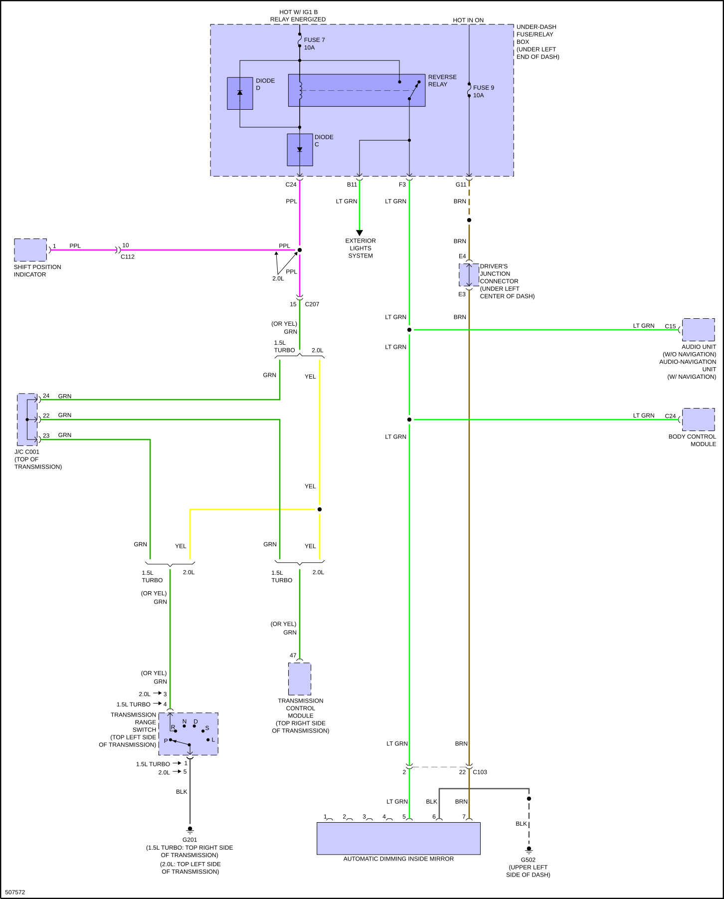
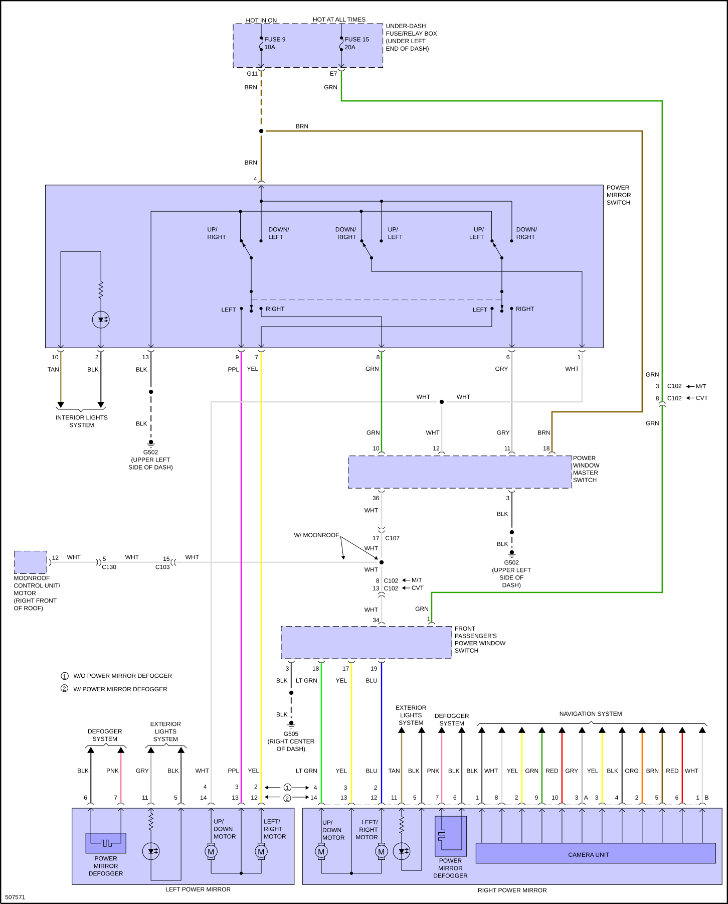

LEMON Manuals
: Even more car manuals for everyone: 1960-2025
Home
>>
Honda
>>
2016
>>
Civic LX, 4D Sedan, Automatic CVT Trans
>>
Repair and Diagnosis (Single Page)
>>
Quick Lookups
>>
Wiring Diagrams
>>
System Wiring Diagrams
>>
Power Mirrors
Power Mirrors
Fig 1: Automatic Day/Night Mirror Circuit

Fig 2: Power Mirrors Circuit
